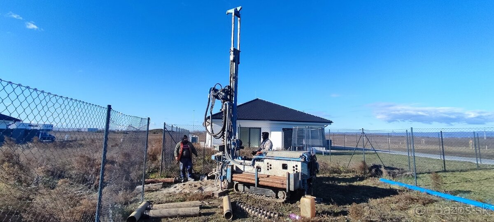
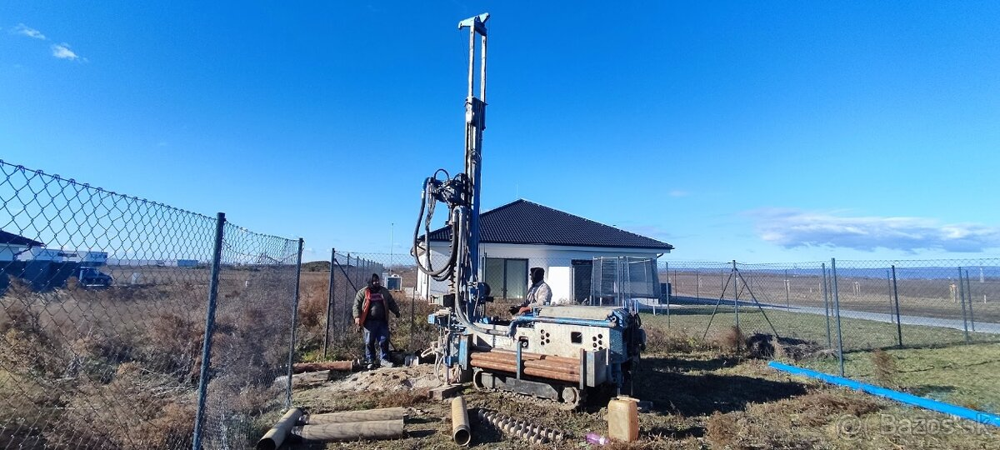

Prečo my
Prečo si vybrať ProfiDrill
Súprava 4 t na gumených pásoch
Nepoškodia dlažbu ani trávnik, prejazd len 1,5 m – dostaneme sa aj do ťažko prístupných miest.
Nezávislá technika
Vlastný generátor a zásoba vody – pracujeme aj bez elektrickej prípojky či prívodu vody na výplach.
Prútikár v cene
Vyhľadanie prameňa skúseným prútikárom je súčasťou ceny – žiadne extra poplatky za obhliadku.
Kompletná dokumentácia
Správa o studni a projektová dokumentácia na kolaudovanie – všetko pripravené pre úrady aj projektantov.